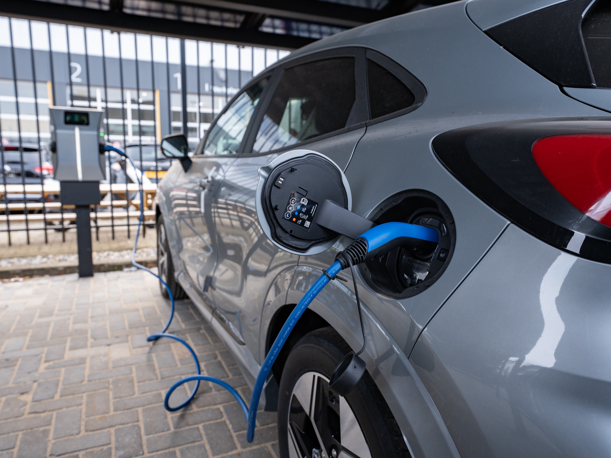

Steeds meer organisaties willen medewerkers, bezoekers en voertuigen kunnen laden — maar de bestaande netaansluiting biedt daar vaak onvoldoende ruimte voor. Met slimme laadinfrastructuur van Vibe benut u uw beschikbare vermogen optimaal en groeit uw laadcapaciteit mee met uw organisatie.
Uw wagenpark elektrificeert, medewerkers rijden steeds vaker elektrisch en bezoekers verwachten dat ze kunnen laden. Maar elke extra laadpaal vraagt vermogen — en uw aansluiting zit al vol. Zo loopt uw elektrificatie vast op de meterkast.
Laden op vol vermogen concurreert met uw gebouw en stapelt pieken op de aansluiting.
PiekoverschrijdingMeer laadpunten via netverzwaring betekent 2–7 jaar wachten — of helemaal niet.
Groei geblokkeerdGesloten laadsoftware bindt u aan één leverancier, met verborgen kosten en weinig regie.
Geen leveranciersvrijheidVoldoende laadpunten voor uw vloot, medewerkers en bezoekers — zonder te wachten op een netverzwaring en klaar voor verdere elektrificatie. Daarvoor is meer nodig dan losse laadpalen: een slim laadplein dat het beschikbare vermogen automatisch verdeelt en samenwerkt met de rest van uw energiesysteem. Vibe ontwerpt, bouwt én beheert het geheel.
— Eén partner. Van ontwerp tot beheer.
Het EMS verdeelt het beschikbare vermogen realtime over de palen — zodat meer voertuigen tegelijk laden zonder de aansluiting te overschrijden.
De bestaande aansluiting plus eventueel solar en accu vormen de vermogensbron.
Het brein verdeelt vermogen dynamisch op basis van prioriteit en netto belasting.
Van 22 kW AC tot 400 kW DC — merk en vermogen gekozen op de gebruikscase.
3 tot 4× meer laadpunten — vloot en bezoek geladen, zonder verzwaring.
Met dynamische load balancing passen 3 tot 4× zoveel laadpunten op dezelfde aansluiting.
vs. statisch verdeeldVan AC voor personeel en bezoek tot DC-snellading voor vloot en trucks.
kW · per gebruikscaseContractueel via SLA — monitoring, onderhoud en storingsafhandeling door Vibe.
uptime · jaarbasis2.0.1, vrij koppelbaar aan elk MSP of EMS. Geen vendor lock-in of verborgen software.
ISO 15118 · Plug & ChargeHoeveel laadpunten op uw aansluiting passen, rekenen we per locatie door.
Stel uw vraagWij analyseren uw aansluiting, laadbehoefte en groeiplannen en berekenen welke laadoplossing het beste past bij uw organisatie.